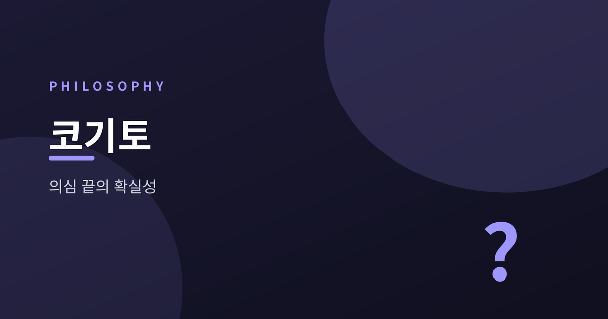
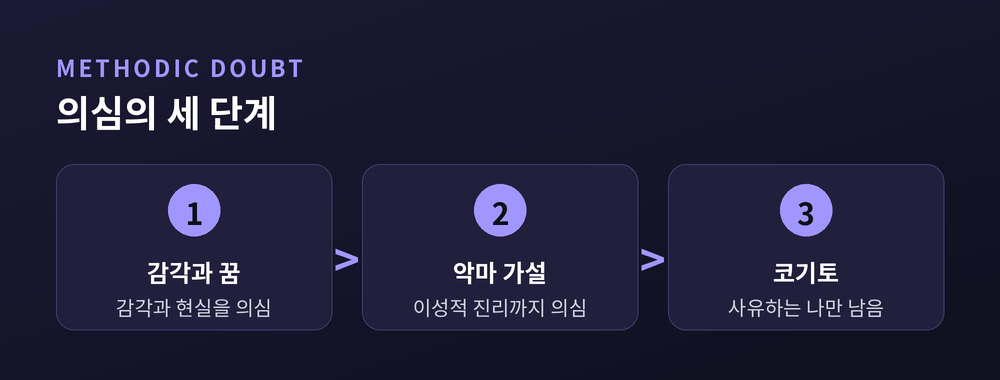
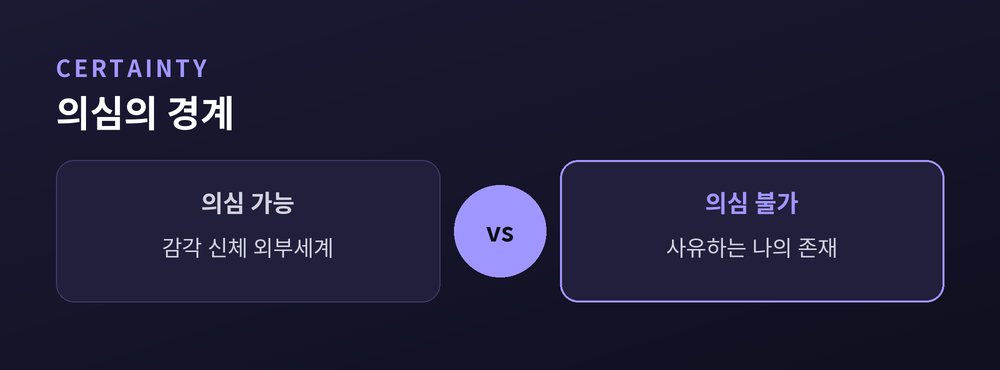
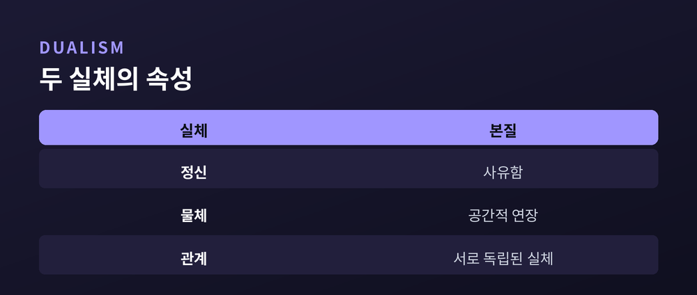
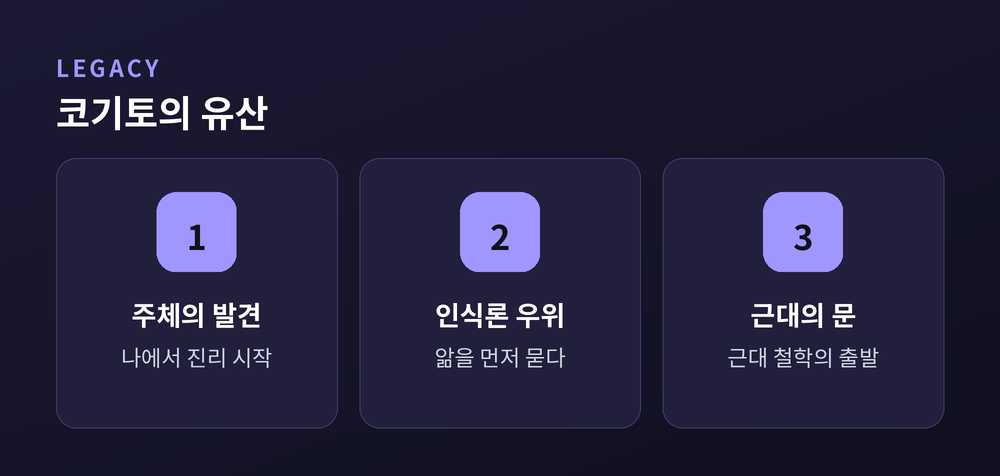

나는 생각한다, 고로 존재한다

"나는 생각한다, 고로 존재한다(Cogito, ergo sum)." 철학사에서 가장 유명한 이 한 문장은 17세기 프랑스 철학자 르네 데카르트가 남긴 근대 철학의 초석입니다. 흔히 명언집에 실리는 이 말은 사실 단순한 격언이 아니라, 모든 것을 의심한 끝에 남은 단 하나의 확실성을 붙잡는 치밀한 사유의 결론입니다.
데카르트의 목표는 분명했습니다. 조금이라도 의심의 여지가 있는 것은 모두 버리고, 결코 흔들리지 않는 확실한 토대 위에서 학문을 다시 세우는 것이었습니다. 그는 이 토대를 찾기 위해 감각도, 수학도, 심지어 자신의 신체까지 의심의 대상으로 삼았습니다.
이 글에서는 코기토가 등장하기까지의 과정, 즉 방법적 회의와 전능한 악마 가설을 따라가 보고, 왜 "생각하는 나"가 의심할 수 없는 확실성이 되는지, 그리고 이 명제를 둘러싼 흔한 오해와 비판까지 차근차근 살펴보겠습니다.
데카르트의 출발점은 방법적 회의(methodic doubt)입니다. 이것은 세상 모든 것을 부정하는 회의주의가 아닙니다. 오히려 확실한 지식에 이르기 위한 하나의 전략적 도구로서, 조금이라도 의심할 수 있는 것은 일단 거짓으로 간주하고 제쳐 두는 방법입니다.
그는 먼저 감각을 의심합니다. 멀리 있는 탑이 둥글게 보이다가 가까이 가면 사각형이듯, 감각은 종종 우리를 속입니다. 한 번이라도 속인 것을 전적으로 신뢰할 수는 없습니다. 다음으로 그는 꿈의 가설을 제기합니다. 지금 내가 깨어 있다고 믿지만, 꿈속에서도 우리는 그것을 현실이라 확신합니다. 그렇다면 지금 이 순간이 꿈이 아니라고 어떻게 장담할 수 있을까요.

이렇게 의심을 밀어붙이면 외부 세계의 존재조차 불확실해집니다. 다만 데카르트는 꿈속에서도 "2 더하기 3은 5"와 같은 수학적 진리는 흔들리지 않는 듯 보인다는 점에 주목합니다. 여기서 그는 의심을 더 극단으로 몰고 가기 위해 하나의 사고 실험을 도입합니다.
데카르트는 전능한 악마(악령, malin génie)라는 가설을 상상합니다. 만약 신처럼 전능하지만 나를 속이는 데만 온 힘을 쏟는 악한 존재가 있다면 어떨까요. 이 악마는 하늘과 땅, 나의 신체는 물론이고, 심지어 내가 확실하다고 믿는 수학적 계산마저도 매번 틀리게 믿도록 나를 조작할 수 있습니다.
이 가설의 목적은 공포를 자아내는 것이 아니라, 의심의 범위를 최대한으로 확장하는 데 있습니다. 감각과 외부 세계뿐 아니라 이성적 진리까지 모두 의심의 그물에 넣음으로써, 데카르트는 정말로 아무것도 남지 않는 극단의 지점에 도달하려 합니다. 그리고 바로 그 지점에서 무엇이 살아남는지를 확인하려는 것입니다.
놀라운 반전이 여기서 일어납니다. 악마가 아무리 나를 속인다 해도, 속고 있는 그 순간 속고 있는 나는 반드시 존재해야 합니다. 존재하지 않는 것을 속일 수는 없기 때문입니다. 즉 내가 의심하고 사유하는 한, 그 사유의 주체인 나는 존재할 수밖에 없습니다.

그리하여 "나는 생각한다, 고로 존재한다"가 도출됩니다. 데카르트는 이 명제를 "내가 그것을 발언하거나 마음속에 떠올릴 때마다 필연적으로 참"인 진리라고 말합니다. 이것이야말로 아무리 강력한 회의로도 무너뜨릴 수 없는 제1원리, 곧 철학의 흔들리지 않는 토대입니다. 여기서 '생각한다'는 좁은 의미의 추론만이 아니라, 의심하고 긍정하고 부정하며 상상하고 느끼는 모든 정신 활동을 아우릅니다.
그렇다면 이렇게 존재가 확인된 '나'는 무엇일까요. 데카르트의 답은 "나는 생각하는 것(res cogitans)"입니다. 이 단계에서 확실한 것은 나의 신체나 물질적 형상이 아니라, 오직 사유하는 정신으로서의 나입니다. 신체는 여전히 악마 가설 아래 의심될 수 있지만, 사유하는 나의 존재만은 부정되지 않기 때문입니다.

이 통찰은 훗날 정신과 물질을 두 개의 서로 다른 실체로 나누는 심신 이원론으로 이어집니다. 사유를 본질로 하는 정신(res cogitans)과 공간적 연장을 본질로 하는 물체(res extensa)의 구분은, 근대 철학의 핵심 주제이자 오래도록 논쟁을 부른 지점이 됩니다.
코기토가 중요한 이유는 인식의 기준을 바꾸어 놓았다는 데 있습니다. 중세 철학이 신과 권위, 전통에서 진리의 근거를 찾았다면, 데카르트는 진리의 확실성을 사유하는 주체 자신 안에서 발견했습니다. 이로써 '생각하는 나'가 모든 지식의 출발점이 되는 근대적 사고가 열립니다.

이 전환은 이후 철학 전체의 방향을 바꾸었습니다. 주체와 자아, 의식의 문제를 철학의 중심으로 끌어올렸고, 인식론이 형이상학에 앞서는 근대적 문제 설정을 낳았습니다. 데카르트를 흔히 "근대 철학의 아버지"라 부르는 이유가 여기에 있습니다.
가장 흔한 오해는 코기토를 삼단논법으로 읽는 것입니다. "생각하는 것은 모두 존재한다, 나는 생각한다, 그러므로 나는 존재한다"라는 추론으로 보는 것이지요. 그러나 데카르트 자신은 이를 논리적 추론이 아니라, 사유하는 순간 곧바로 파악되는 직관적 자명성으로 이해했습니다. 존재는 사유로부터 연역되는 것이 아니라, 사유의 수행과 동시에 직접 드러납니다.
또한 여러 비판이 제기되었습니다. 예컨대 니체와 리히텐베르크는 "생각한다"에서 곧바로 실체적 '나'를 끌어내는 것은 과도하다고 지적했습니다. 확실한 것은 "생각이 일어나고 있다"는 사실뿐이며, 그 배후에 통일된 자아가 있다는 보장은 없다는 것입니다. 이러한 비판들은 코기토의 한계를 보여 주는 동시에, 이 명제가 여전히 살아 있는 철학적 물음임을 증명합니다.
코기토는 단순한 명언이 아니라, 확실성을 향한 인간 이성의 여정 전체를 압축한 명제입니다. 모든 것을 의심한 끝에 의심하는 자기 자신만은 의심할 수 없다는 이 통찰은, 400년이 지난 지금도 "나는 누구인가"라는 물음 앞에 선 우리에게 사유의 출발점을 제시합니다.